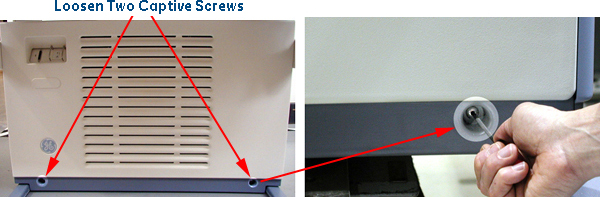
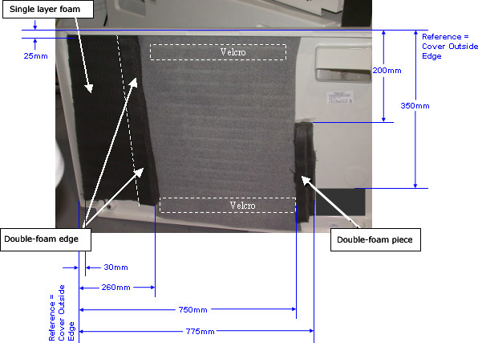

Operating Documentation
Direction 5167277-800, Rev# 8
5167277-800 - FX/Xtream SW & Upgrade Procedures
Operating Documentation |
| Last Revised: | 21 June, 2005 |
This procedure describes the steps required to upgrade the GRE Console front cover with acoustic and airflow-sealing foam. Foam is added to the console’s front cover to reduce the added fan noise and to force air to flow through the chassis to optimize cooling.
Remove front cover. See Illustration 1.
Loosen two captive screws at bottom of console.
Rotate bottom of cover outward and upward until it may be lifted free of the console at the top.
Peel the paper away from the adhesive tape on the back of the dense foam and attach them to the inside front cover as shown in Illustration 2. Position the double-foam edge to create an airflow seal.
Attach Velcro strips to the console front cover as shown in Illustration 2.
Attach the thin gray, air-filter foam to the Velcro “hooks” by pressing the foam against the hooks.
(For FX/Xtream Upgrades Only) Set the front cover aside. It will be re-installed after the console has been completely tested.
(For Front-Cover-Only Kit Upgrades (P/N 5141154)) Re-install console front cover.
Illustration 1: Front Cover Removal

Illustration 2: Inside Front Cover with New Foam Insulation
